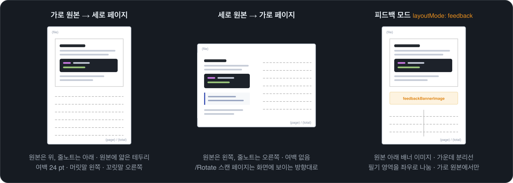

하는 일
- 📝줄노트 자동 배치
가로 원본은 아래에, 세로 원본은 오른쪽에 필기 공간.
- 💬피드백 모드
배너 이미지와 분리선으로 필기 영역을 둘로 나눕니다.
- 📓노트북도 바로
.ipynb · .md는 Ipynb PDF Converter로 먼저 PDF로 바꿉니다.
- 📐용지 선택
원본 크기 그대로, 또는 A4 · B5 · 태블릿 화면 크기.
- 📋텍스트 그대로
원본의 글자를 드래그해서 복사하고 검색할 수 있습니다.
- 🔒비밀번호
AES-256 암호화와 열람 권한 설정.
시작하기
ext install leekh.pdf2note
.pdf·.ipynb·.md파일을 우클릭- 필기 영역 추가 → 필기 영역 추가 (PDF) 선택
- 같은 폴더에
원본이름_note.pdf가 생깁니다
.ipynb · .md 입력에는 Ipynb PDF Converter 0.10 이상이 필요하며, 함께 설치됩니다.